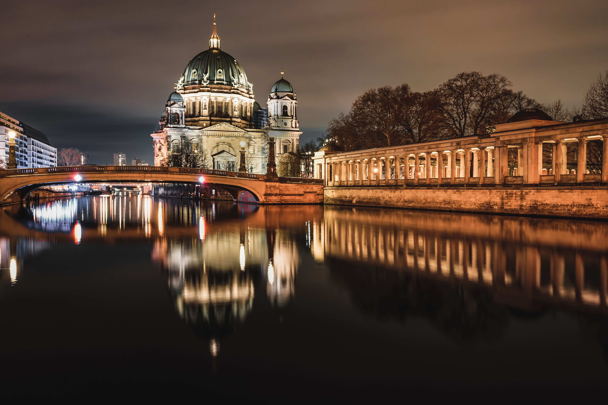
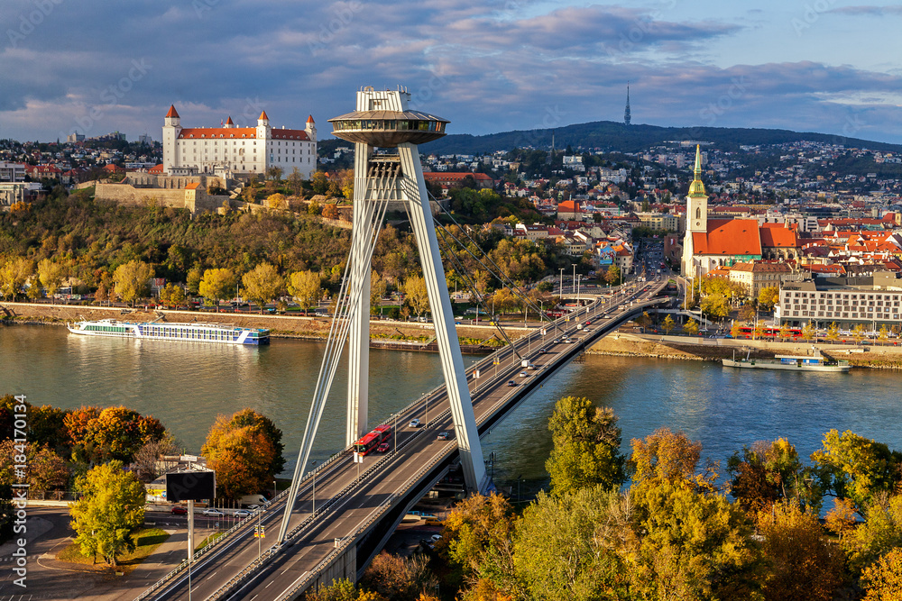

3. Мадрид (Іспанія)

Столиця Іспанії, відома своєю багатою культурною спадщиною, музеями та смачною кухнею.
Блог про на мою думку найкращі 3 міста світу та їх особливості.

Старовинне європейське місто з неповторною атмосферою, легендарними кав'ярнями та багатою архітектурною спадщиною.

Чарівне місто з багатою історією, де сучасність гармонійно поєднується з минулим.
Столиця Іспанії, відома своєю багатою культурною спадщиною, музеями та смачною кухнею.